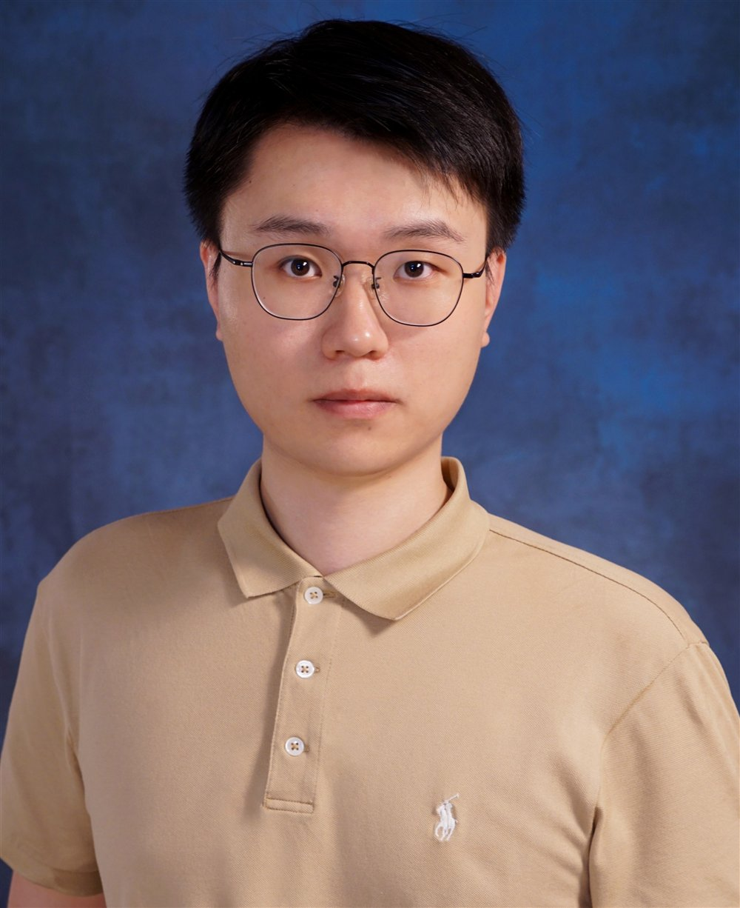

Vertical Integration and Executive Compensation Arrangements
2026 AFAANZ Best Paper Award in Corporate Governance
香港中文大学商学院 · 会计学院
会计学博士候选人
我现为香港中文大学商学院会计学院会计学博士候选人。加入香港中文大学之前，我在上海财经大学先后取得会计学硕士学位（2024年）和会计学学士学位（2022年）。我的研究考察信息披露和信息中介如何影响市场效率及企业真实经营活动，并关注资本市场信号传导至企业决策时的信息处理成本。

工作论文
2026 AFAANZ Best Paper Award in Corporate Governance